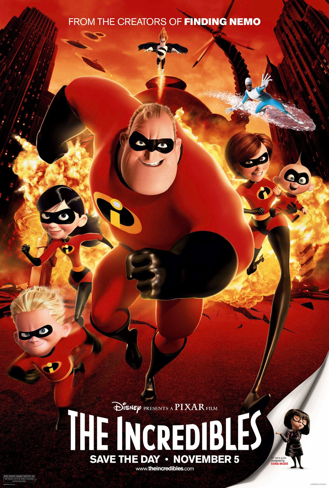

Hi there! Like everyone else, I like watching movies. Maybe not as much as the Marvel fan next door, but I have a set of movies that I like to watch over and over throughout the years. Click on the links inside the sidebar to see these movies.
Movie Table with Synopsis
| Movie No. | Movie Title | Move Poster | Synopsis |
| 1 | 13 Going on 30 | A girl who's sick of the social strictures of junior high is transformed into a grownup overnight. In this feel-good fairy tale, teenager Jenna wants a boyfriend, and when she's unable to find one, she fantasizes about being a well-adjusted adult. Suddenly, her secret desire becomes a reality, and she is transformed into a 30-year-old (Jennifer Garner). But adulthood, with its own set of male-female challenges, isn't as easy as it looks. Go to top |
|
| 2 | White Chicks | Two FBI agent brothers, Marcus and Kevin Copeland, accidentally foil a drug bust. As punishment, they are forced to escort a pair of socialites to the Hamptons, where they're going to be used as bait for a kidnapper. But when the girls realize the FBI's plan, they refuse to go. Left without options, Marcus and Kevin decide to pose as the sisters, transforming themselves from African-American men into a pair of blonde, white women. Go to top |
|
| 3 | The Simpsons Movie |  |
The combination of Homer, his new pet pig, and a leaky silo full of excrement triggers a disaster that threatens not just Springfield but the entire world. An angry mob descends on the Simpson home, splitting the family. With Earth's fate in the balance, Homer sets out on a quest for redemption in order to save the world and earn Marge's (Julie Kavner) forgiveness. Go to top |
| 4 | The Incredibles |  | Married superheroes Mr. Incredible and Elastigirl are forced to assume mundane lives as Bob and Helen Parr after all super-powered activities have been banned by the government. While Mr. Incredible loves his wife and kids, he longs to return to a life of adventure, and he gets a chance when summoned to an island to battle an out-of-control robot. Soon, Mr. Incredible is in trouble, and it's up to his family to save him. Go to top |
| 5 | Enchanted | In the fairy-tale land of Andalasia, pretty young Giselle frolics with her woodland pals, and falls in love with the handsome Prince Edward, but when Giselle arrives at the castle to marry her Prince Charming, his evil stepmother sends the princess-to-be to a place where there are `no happy ever afters': New York City. Cynical divorce lawyer Robert comes to her rescue, but can Giselle find her way back to her true love? Go to top |
|
| 6 | The Other Woman | New York lawyer Carly Whitten lives by strict rules when it comes to romantic relationships, but when she falls for suave, handsome Mark King, she begins an affair with him. A surprise visit to Mark's home reveals that he is married to devoted housewife Kate (Leslie Mann). Carly and Kate direct their hurt and anger toward Mark, and when they discover yet a third woman caught in his web of lies, the three join forces for revenge. Go to top |
|
| 7 | Confessions of a Shopaholic | Like many New York City gals, Rebecca Bloomwood loves to shop. The trouble is, she shops so much that she is drowning in debt. Rebecca would love to work at the city's top fashion magazine but, so far, has not been able to get her foot in the door. Then she lands a job as an advice columnist for a financial magazine owned by the same company. Her column becomes an overnight success, but her secret threatens to ruin her love life and career. Go to top |
|
| 8 | Jurassic World | Located off the coast of Costa Rica, the Jurassic World luxury resort provides a habitat for an array of genetically engineered dinosaurs, including the vicious and intelligent Indominus rex. When the massive creature escapes, it sets off a chain reaction that causes the other dinos to run amok. Now, it's up to a former military man and animal expert to use his special skills to save two young brothers and the rest of the tourists from an all-out, prehistoric assault. Go to top |
|
| 9 | Free Guy |  |
When a bank teller discovers he's actually a background player in an open-world video game, he decides to become the hero of his own story -- one that he can rewrite himself. In a world where there's no limits, he's determined to save the day his way before it's too late, and maybe find a little romance with the coder who conceived him. Go to top |
| 10 | Finding Nemo | Marlin, a clown fish, is overly cautious with his son, Nemo, who has a foreshortened fin. When Nemo swims too close to the surface to prove himself, he is caught by a diver, and horrified Marlin must set out to find him. A blue reef fish named Dory -- who has a really short memory -- joins Marlin and complicates the encounters with sharks, jellyfish, and a host of ocean dangers. Meanwhile, Nemo plots his escape from a dentist's fish tank. Go to top |